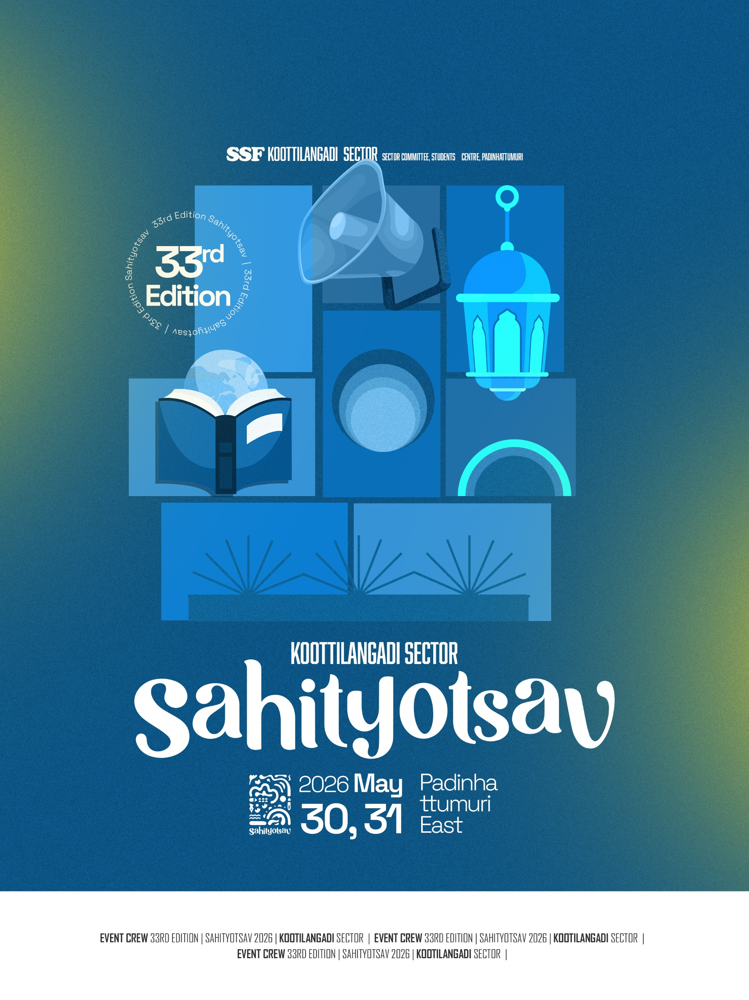

Celebrate literature, art and culture. View live results, leaderboards, and the gallery.

SSF Koottilangadi Sector Sahityotsav 2026 held at Padinhattumuri East on 30,31 of May 2026. This is the official website of Koottilangadi Sector Sahityotsav which publishes result, shares lve updates of leaderboard, updates time scheduling of programs on each stages and so on.
“Echoes Within” represents the voices, memories, emotions, and truths that live inside us — even when unspoken.
Silent conversations, struggles, dreams, faith, doubts, and discovering who we truly are. Ideal for speeches, essays, and mono acts.
Childhood memories, lost moments, nostalgia, and emotional imprints that echo through time. Perfect for storytelling, poetry, and visual arts.
Culture, values, injustice, and beliefs live inside us too. Explore internal conflict between right and wrong with debates, essays, and impactful performances.
Inner peace versus inner chaos, faith, purpose, and self-realization. Reflective writing and soulful performances reveal the truth within.
Art becomes a voice for the unseen. Poetry, music, drama, and creativity release inner echoes to the world.
“Echoes Within is a journey into the unseen world inside every individual. It is about the voices we don’t speak, the memories we carry, and the truths we often hide. Through this Sahityotsav, we invite every participant to express not just talent, but their inner world—because every creation is an echo of what lies within.”
Theme essence: “Where silence speaks and souls respond.”
“എക്കോസ് വിത്തിൻ എന്നത് ഓരോ വ്യക്തിയുടെയും ഉള്ളിലെ അദൃശ്യമായ ലോകത്തിലേക്കുള്ള ഒരു യാത്രയാണ്. നമ്മൾ സംസാരിക്കാത്ത ശബ്ദങ്ങളെക്കുറിച്ചും, നമ്മൾ വഹിക്കുന്ന ഓർമ്മകളെക്കുറിച്ചും, നമ്മൾ പലപ്പോഴും മറയ്ക്കുന്ന സത്യങ്ങളെക്കുറിച്ചുമാണ്. ഈ സാഹിത്യോത്സവത്തിലൂടെ, ഓരോ പങ്കാളിയെയും കഴിവുകൾ മാത്രമല്ല, അവരുടെ ആന്തരിക ലോകത്തെയും പ്രകടിപ്പിക്കാൻ ഞങ്ങൾ ക്ഷണിക്കുന്നു - കാരണം ഓരോ സൃഷ്ടിയും ഉള്ളിലുള്ളതിന്റെ പ്രതിധ്വനിയാണ്.”